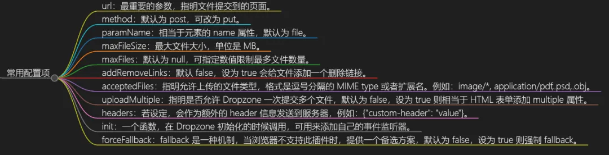
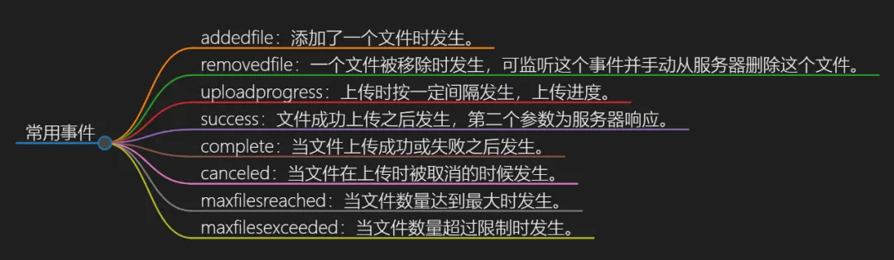

HaoTian · 2024-10-03 21:49:11
Dropzone.js 是一个开源的 JavaScript 库，主要用于实现文件拖放上传功能。允许用户通过拖放的方式将文件添加到网页上的指定区域，并且可以轻松地集成到任何网页中。Dropzone.js 提供了丰富的 API 和配置选项，可以自定义上传行为、样式和反馈信息。
它具有以下特点：
Chrome、Firefox、Safari 等，保证在不同浏览器下的稳定性和一致性。插件 && 组件
安装
要使用 Dropzone.js, 可以直接用于 CDN 文件，添加到文件中。也可以选择使用包管理工具安装。
npm install --save dropzone
yarn add dropzone
创建 HTML 元素
在页面中添加一个 HTML 元素，用于承载 Dropzone 示例。
<div id="mydropzone" class="dropzone"></div>
初始化 Dropzone 实例
初始化 Dropzone 对象，并指定配置选项。
// 声明一个全局变量来保存 Dropzone 实例
let mydropzone;
// 在页面加载完成后执行初始化
document.addEventListener("DOMContentLoaded", function () {
// 创建 Dropzone 实例
mydropzone = new Dropzone("#mydropzone", {
url: "/upload", // 必须配置，文件的上传地址
maxfiles: 10, // 默认为 null，可指定为一个数值，限制最多文件数量
maxfilesize: 5, // 限制文件的大小，单位是 MB
acceptedfiles: ".jpg,.jpeg,.doc,.docx,.ppt,.pptx,.txt,.avi,.pdf,.mp3,.zip", // 允许上传的文件类型，文件扩展名以逗号隔开
autoprocessqueue: false, // 默认为 true，即拖入文件立即自动上传；若设为 false，则需手动点击按钮上传
paramName: "file", // 相当于 <input> 元素的 name 属性，默认为 file
});
});
常用配置项
处理上传事件
为 Dropzone 对象添加事件监听器，以便处理文件上传过程中的各种事件，如文件添加、上传成功、上传失败等。
mydropzone.on("addedfile", function (file) {
// 文件被添加到队列时触发的事件处理函数
console.log("文件添加成功:", file);
});
mydropzone.on("sending", function (file, xhr, formData) {
// 文件开始上传时触发的事件处理函数
console.log("开始上传文件:", file);
});
mydropzone.on("success", function (file, response) {
// 文件上传成功时触发的事件处理函数
console.log("文件上传成功:", file);
});
// 更多事件回调函数可以根据需要添加
常用事件
Dropzone.js 适用于各种场景，包括但不限于：
Dropzone.js 是一个轻量级、易于集成和使用的开源 JavaScript 拖拽文件上传库。